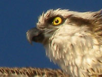

Портрет орла
Портрет орла, похожего на сову, сделан в Ростовском зоопарке. Не уверен, что это именно орёл. Может сокол или коршун.
Взлетающий орёл сфотографирован в Шарм эль Шейхе на набережной Красного моря. Воробей - в Москве на Чистых прудах.


Zoom